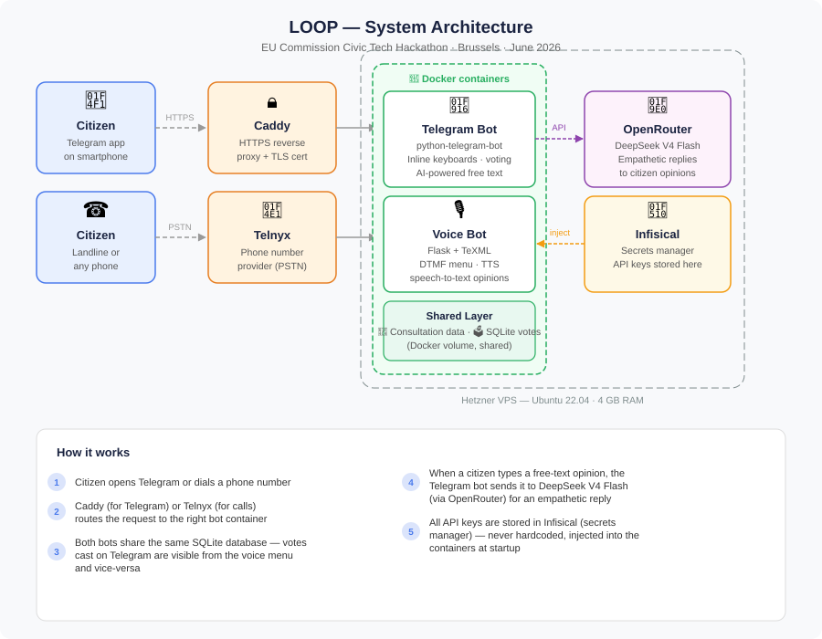

About me
I'm a regenerative development and innovation expert and data analyst, building at the intersection of environment, AI, and innovation management. Over 12 years working across government, academia, and civil society, from co-authoring EU climate policy reports to designing AI-powered data pipelines.
I'm a PhD candidate in Regenerative Development, Innovation and Data Analysis at the University of Coimbra (CES), under a joint supervision agreement with Wageningen University in the Netherlands. I'm also an EU Climate Pact Ambassador and a member of the EU's FRANET network, and was part of one of the three highlighted AI-infrastructure projects recognised by the European Commission during the EU's Civic Tech Hackathon 2026 in Brussels.
My technical toolkit spans AI pipelines (n8n, OpenClaw, Hermes Agent, Claude Code, OpenCode), data analysis (Python, SQL, QGIS), and data visualisation (Python, HTML, Power BI), alongside policy analysis, innovation management, sustainability finance, and strategic foresight. I'm currently exploring how data science, innovation policy, and AI tools can accelerate the transition to regenerative development across both business and public sectors.
PhD research:
Regenerative potential index
Regenerative potential index, an original evaluation framework applied to Amsterdam
| Author | Sérgio Pedro |
|---|---|
| AI / tools | Python (statistical normalisation & aggregation), interactive Plotly-style visualisations |
| Benefits | Single composite regenerative-capacity score, comparable across geographies and over time, usable by both public and private sectors |
| Potential applications | Urban planning authorities, real-estate developers, impact investors, and policy evaluators assessing regenerative capacity of a territory |
The Regenerative Potential Index (RPI) is an original evaluation framework developed as part of PhD research to measure and compare the regenerative potential of urban territories. Unlike existing sustainability indices, the RPI is designed to be applicable to both public and private sectors and asks a forward-looking question: how capable is a territory of regenerating itself? It aggregates multiple indicators across four dimensions, economic, environmental, political and social, into a single composite score (0–100) per territorial unit per year.
The RPI framework introduces a novel methodological approach combining dimension weighting, z-score normalisation, and temporal aggregation to produce a score comparable across geographies and over time. Its design explicitly targets the gap between static sustainability audits and dynamic regenerative capacity assessment, making it equally usable for urban planning authorities, real-estate developers, impact investors, and policy evaluators.
This case study applies the RPI to the eight districts of the municipality of Amsterdam over a decade of data (2015–2024). The municipality's overall RPI in 2024 stands at 47.93, down from 49.98 in 2015. This modest decline conceals important contrasts: the environmental dimension improved (+1.46 pts) while economic performance deteriorated sharply (–7.21 pts, reaching 43.01 in 2024). The visualisations below are interactive, hover to inspect values, click legend entries to isolate districts, and use dropdowns to switch dimensions.
RPI overall score, time evolution (2015–2024)
Municipality aggregate (black line) declined from 49.98 to 47.93, masking significant heterogeneity across districts. Hover over any point to inspect values; click a legend entry to isolate a district.
RPI by dimension, time evolution
Environmental (51.53 in 2024) is the strongest dimension and improving; economic (43.01) is the weakest and has declined the most since 2015. Use the dropdown to switch between dimensions.
District comparison, 2024 snapshot
Ranks all eight districts plus the municipality aggregate for each dimension. Significant spatial inequality exists within Amsterdam. Use the dropdown to compare overall, economic, environmental, political or social performance.
Scenario projections, 2030 & 2050
Constrained (p25 trend) forecasts a decline to 35.79 by 2050; BAU (p50) projects 49.34; optimistic (p75) reaches 57.44. The gap highlights how sensitive regenerative trajectories are to near-term policy choices.
Interactive district map, Amsterdam (2024)
Spatial distribution of RPI overall scores across Amsterdam's districts. Inner-city and waterfront districts score differently from outer peripheral ones. Pan, zoom and hover to read each district's score.
MiningEurope
Georeferenced leads radar (case study applied to environmental topic)
| Author | Sérgio Pedro |
|---|---|
| AI / tools | Python data analysis & visualisation (8 interactive dashboards), media/legal/civic monitoring pipeline |
| Benefits | A replicable environmental-conflict monitoring radar, demonstrated here on 14 Portuguese mine sites as a case study — the same methodology (media, legal, civic, and incident tracking) scales directly to a European or global rollout, not limited to the sites shown |
| Potential applications | Any sector with dispersed physical sites needing continuous risk/conflict monitoring: extractives beyond mining (energy, agribusiness, infrastructure), corporate ESG/supply-chain risk teams, and public bodies tracking environmental compliance across a region |
This project presents a georeferenced leads radar — a replicable data pipeline for continuous environmental conflict monitoring across a portfolio of dispersed physical sites. The methodology tracks four signal types (media coverage, legal disputes, civic engagement events, and contamination/depletion incidents), aggregates them per site, and surfaces patterns through interactive visualisations. The case study here, developed in collaboration with Friends of the Earth Europe, applies this radar to 14 mine sites across Portugal between 2015 and 2026, producing eight dashboards that together map a decade of environmental conflict intelligence.
The Portuguese mining case study covers active operations (Neves-Corvo, Panasqueira), contested projects (Barroso lithium mine, the most monitored site with 56 articles in 2024), and abandoned sites (Lousal, Urgeiriça), across Portugal's major river basins (Douro, Tagus, Sado, Mira, Cavado, Tâmega). The same four-track monitoring methodology generalises directly beyond mining — to energy infrastructure, agribusiness, real-estate developments, or any domain where georeferenced conflict signals translate into early risk or opportunity intelligence.
1 · Interactive map
Mine locations across Portugal with filters, search, and a detailed info panel for each mine.
2 · Heatmap timeline
Articles monitored per mine per year (2015–2026), showing which mines attracted most attention and when.
3 · Conflict types by mine
Stacked bar chart showing water contamination, water depletion, court-related and NGO/civic articles per mine.
4 · Water flags
Water contamination vs water depletion articles per mine, with toggle between absolute counts and percentage.
5 · Articles by year
Total monitored articles per year (2015–2026), stacked by mine status, with reference lines at key dates.
6 · Mine summary grid
Colour-coded grid comparing all 14 mines across five environmental indicators.
7 · Events timeline
All documented environmental events plotted by mine and year, water, legal and civic events.
8 · Gantt timeline
Monitoring coverage periods per mine with water contamination and court incident markers overlaid.
The full report
The 45-page written report behind this dashboard: 14 mine sites across active, planned, and abandoned categories, documenting water contamination and depletion incidents from 2015 to 2026, sourced from Portuguese media, official environmental impact assessments, academic publications, NGO communications, and legal records. Written by Sérgio Pedro (University of Aveiro), reviewed by Lindsey Wuisan (Friends of the Earth Europe).
LOOP

LOOP, a civic participation gateway for every EU citizen
| Authors | Team project (alphabetical order): Andrés Pereira de Luce, Fernando Andrés García, Madalina Bouros, Rafail Promikyridis, Sérgio Pedro, Solène Wolff, Tjerk S Boorsma |
|---|---|
| AI / tools | DeepSeek V4 Flash (via OpenRouter) for opinion acknowledgement & plain-language summaries; Infisical for runtime secrets |
| Software | Docker, Flask, Telnyx (voice/DTMF), Telegram Bot API, SQLite, Caddy, GitHub Actions |
| Benefits | Reaches citizens without smartphones via voice calls alongside a Telegram bot; closes the feedback loop by tracking each consultation from open to implementation |
| Potential applications | Municipalities and national governments broadening civic-consultation reach; any public-engagement platform (Decidim, CONSUL, Have Your Say) needing accessible non-smartphone channels |
LOOP is an open-source civic participation gateway built for the EU Commission Civic Tech Hackathon 2026, one of only three projects highlighted at the event. It responds to three compounding failures named in the hackathon's own background note: consultations are fragmented across EU, national, and municipal platforms with no single point of discovery, the language they're written in is complex enough to keep participation theoretical rather than practical, and roughly 40–45 million EU citizens, one in ten, have no smartphone and are unreachable by any existing civic tech platform. LOOP does not replace official platforms like Decidim or Have Your Say. It makes them discoverable, understandable, and actionable through channels citizens already use.
Citizens register once, linking a phone number to a location and topic preferences, currently a lightweight mock flow standing in for a future EU Digital Identity Wallet integration, so the same architecture works for a single municipality or a nationwide rollout without changing the model. From there, LOOP proactively notifies citizens when a relevant consultation opens in their own municipality, country, or at EU level, rather than waiting for them to go looking for it.
Citizens interact through the channel that works for them: a voice call (DTMF keypad voting, no smartphone needed), or a Telegram bot with inline keyboards and AI-powered free-text opinion submission. Both channels share the same backend, a single SQLite vote database, so votes cast by phone are immediately visible in the Telegram interface and vice versa. Each consultation is presented as a four-field card: title, theme, deadline, and an AI-generated plain-language summary, with four possible responses: know more, express my opinion, vote yes, or vote no.
Every contribution triggers two things at once: an immediate, warmly worded confirmation naming the consultation and how many others have already taken part, and a one-tap shareable invitation the citizen can forward to bring someone else in. The Telegram bot sends free-text opinions to DeepSeek V4 Flash via OpenRouter for empathetic acknowledgement, and all API keys are managed through Infisical (open-source secrets manager), never hardcoded, injected at container startup. The full stack (Caddy, Docker, Flask, Telnyx, GitHub Actions) is open-source.
LOOP directly addresses the feedback loop absence identified as the primary driver of EU electoral abstention (49.3%): every vote and opinion routes to the official platform that launched the consultation, while an anonymised copy feeds a live tracking dashboard showing each consultation's status from open, to under review, to decision published, to implementation, answering the question citizens actually ask: did my participation make a difference?
The team's full vision reaches further than the two channels built for the 48-hour demo: a native RCS experience and an embedded chat bot inside WhatsApp and Signal alongside the Telegram and voice channels already working, and a website for citizens who prefer to browse. Interoperability is designed in from the start through an API and MCP layer, so any civic platform, Decidim, CONSUL, Adhocracy+, Have Your Say, can exchange participation data with any other instead of every platform building the same integration separately. Data sovereignty is a first-class design principle throughout, with the goal of citizen participation data that never leaves the jurisdiction where the participation happened. Positioned this way, LOOP is shared civic infrastructure a single municipality can deploy today, with a natural path toward adoption as a reference implementation for the future European Civic Tech Hub.
System architecture
Two Docker containers (Telegram bot and voice bot) share a SQLite volume on a Hetzner VPS. Caddy handles HTTPS for Telegram webhooks; Telnyx provides the PSTN phone number. Secrets are injected at startup via Infisical.

The citizen journey
From a one-time registration to knowing what happened to a vote: proactive notification, a four-field consultation card, four response options, a two-message confirmation, and a dual-routed result that answers "did my participation make a difference?"

How wide the door opens
Telegram and voice are working today; RCS, an embedded chat bot, and a full website are the team's wider vision for the same gateway, not yet built for the 48-hour demo.

A gateway, not a new platform
LOOP connects citizens to Decidim, Have Your Say, CONSUL, Adhocracy+, and national or municipal portals through one shared API and MCP layer, so each platform integrates once instead of every civic app rebuilding the same connection.

Porto liveability index
Porto liveability index, urban liveability and democracy in Porto's parishes
| Authors | Sérgio Pedro, co-authored with Giovanni Allegretti & Dirk Roep |
|---|---|
| AI / tools | Python (index construction, standardisation, weighting), interactive charts & map visualisations |
| Benefits | Ecocentric liveability lens revealing spatial inequality within a city, at both city and parish level |
| Potential applications | Municipal planning departments, urban policy makers, and EU cohesion-policy stakeholders assessing multi-dimensional liveability |
How liveable a city is doesn't just shape day-to-day comfort, it shapes how strongly people engage in local democracy. This research reframes "liveability" through an ecocentric lens, moving beyond conventional indices that focus almost entirely on human convenience, and applies a modified liveability index to Porto, Portugal, at both the city and parish level.
The index combines eight dimensions: transport, culture, economy, inequality, security & pollution, environment, housing, and health, into a single score. Each dimension is first standardised (so very different units, like "doctors per 1,000 people" and "air quality index", become comparable), then weighted by importance (environment counts most, at 20%, followed by health and security/pollution at 15% each), and finally combined into one bounded liveability score per geography. Inequality and insecurity/pollution pull the score down when they're high, since more of either makes a place less liveable.
The city-wide score shows clear room for improvement, particularly in transport, inequality, insecurity/pollution, and housing & urban regeneration, closely matching the municipality's own priorities, such as chronic traffic congestion and the air and noise pollution that comes with it. At the parish level, the two city-centre parishes, Cedofeita/Santo Ildefonso/Sé/Miragaia/São Nicolau/Vitória and Lordelo do Ouro e Massarelos, score highest, mainly because they concentrate far more shops, businesses and cultural venues than the rest of the city.
1 · Liveability score, dimension by dimension
Pick a geography from the dropdown (the city overall, or any of the 7 parishes) to see its overall liveability score next to each of the 8 dimensions that built it. Green bars pull the score up, red bars pull it down, so it's easy to spot a parish's strengths and weak points at a glance.
2 · How the 7 parishes compare
All seven parishes side-by-side, dimension by dimension. The two city-centre parishes stand out with notably higher economy and culture scores, a direct result of having more shops, businesses and cultural venues nearby. Click a parish's name in the legend to isolate it.
3 · Where liveability is highest across the city
A map view of the same scores, with distinct colours marking each parish's liveability level, so it's easy to see at a glance which parts of Porto score higher and which need more investment. Pan, zoom and hover over any parish to read its exact score.
OpenClaw pipeline
OpenClaw personal pipeline – A fleet of autonomous agents running my daily operations
| Author | Sérgio Pedro |
|---|---|
| AI / tools | OpenClaw multi-agent framework, multi-provider LLM fallback chains (open-weight models primary, paid tier as last resort) |
| Software | Docker, Telegram, Telnyx (voice), self-hosted gateway on a zero-trust network, Infisical secrets manager |
| Benefits | 8 autonomous specialised agents running daily research, drafting, and monitoring with no manual trigger; a provider outage never takes the whole system down |
| Potential applications | Any organisation automating repetitive multi-step admin (business ops, government casework triage) with resilient, provider-redundant AI infrastructure |
OpenClaw pipeline is the self-hosted AI infrastructure that runs my daily operations: not a single assistant, but a fleet of eight specialized agents, each with its own role, memory, and model routing, running continuously on a personal server. One drafts cover letters. One tracks markets. One screens its own teammates for health and policy compliance. Where most personal-AI setups are a single chatbot, this is closer to a small, always-on team.
Requests arrive through whichever channel fits, a Telegram message or a voice call, and are routed through a self-hosted gateway running in Docker, reachable only over a zero-trust private network. From there, each request lands with the right specialist agent, which draws on a shared, persistent memory layer and a secrets manager that injects credentials at runtime. Nothing is ever hardcoded.
The engineering choices are deliberate. Every agent has an independent, multi-provider language-model fallback chain: open-weight models doing the bulk of the work, with a paid tier as a last resort, so a single provider outage or rate limit never takes the system down. A scheduler drives a meaningful share of the work without any manual trigger: daily research briefs, health checks, and digests run on their own, with monitoring watching the fleet's uptime in the background.
OpenClaw pipeline started as a way to offload repetitive personal admin; it has become a working testbed for the architecture patterns that scale into production multi-agent systems: fallback design, secrets handling, autonomous scheduling.
System architecture
Telegram and voice interfaces route through a self-hosted, Docker-based gateway on a zero-trust private network. Eight specialized agents share a persistent memory layer, multi-provider LLM routing with automatic fallback, and a runtime secrets manager, with scheduling and monitoring running the fleet autonomously.

Agent roster
Each of the eight agents runs independently, with its own role, memory, and model fallback chain, from daily investment research to cover-letter drafting to fleet-wide health checks.

Anatomy of a request
A single Telegram message traced end to end: routed to the right agent, grounded in memory, then resolved through that agent's model chain. The paid tier only gets involved when every free-tier option ahead of it has already failed.

A day in the fleet's life
Representative schedule, not a literal one: several agents run autonomously across the day without any message from me, while others (Assistant, Calls, Coverletter) respond on demand.

Independent fallback chains
Each agent's model chain is ordered differently on purpose: no two share the same first two providers, so one provider's rate limit can't cascade into a fleet-wide outage.

n8n pipeline
n8n pipeline, three workflows that run without me
| Author | Sérgio Pedro |
|---|---|
| AI / tools | LLM API for cover-letter drafting, Firecrawl for web content extraction |
| Software | n8n, SQLite, Notion, Google Sheets, RapidAPI |
| Benefits | 25 automated runs a day, discovering job listings and drafting a first-pass cover letter with zero manual triggering; monitored independently by a separate agent |
| Potential applications | Recruitment agencies, HR departments, or any repetitive multi-step workflow needing deduplication, integration orchestration, and LLM-assisted drafting |
n8n pipeline is a small workflow-automation instance running three scheduled jobs on the same personal server as the rest of my infrastructure. It started as a way to take a specific repetitive process, job hunting, off my plate entirely: one workflow finds new opportunities, another drafts the first pass at a cover letter, and a third watches both for failures.
A daily job discovery workflow scans for new listings, filters out duplicates and anything already reviewed, and writes fresh entries into a Notion database. An hourly cover letter workflow then picks up queued entries and drafts a first pass using an LLM, saving the result back to Notion for review. Twenty-five runs a day between the two, and neither needs me to trigger it.
The instance is SQLite-backed and integrates with Notion, Google Sheets, an LLM API, Firecrawl for web content, and RapidAPI for supporting data lookups. It runs on the same Hetzner VPS as my OpenClaw agent pipeline, on a shared Docker network, but the two systems are otherwise independent. One nice side effect: OpenClaw's guardian agent has its own skill that checks n8n's health, so the automation pipeline gets watched by a different system entirely, not just by itself.
It is a small project next to the agent fleet, but it uses the same underlying patterns, scheduled triggers, deduplication, integration orchestration, and a dedicated error handler, that scale to much larger automation work.
System architecture
Two scheduled triggers feed two workflows, each with its own integrations; a third workflow catches failures from either one. Monitored independently by OpenClaw's guardian agent as a second set of eyes.

A day of scheduled runs
One daily run for job discovery, twenty-four hourly runs for the cover letter generator, and an error handler watching both around the clock.

One posting, traced end to end
From a fresh listing showing up in a scan to a drafted cover letter ready for review, with no manual step in between.